■ 参考動画（世界観の参照・業態一致）
※参考2本の「フェード×施術を寄りで魅せる」質感を、本モックの施術カット（S3〜S8・S11〜S13）に反映しています。
S1 / 0–3秒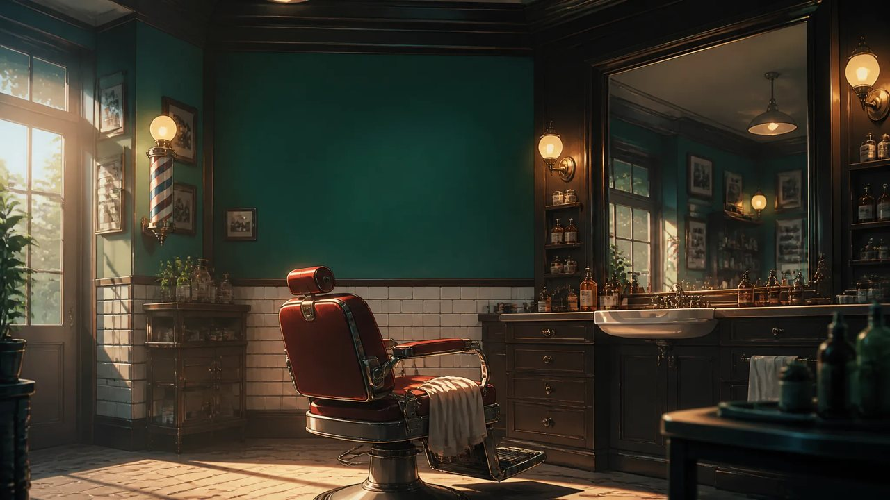
（三浦理容室 ロゴ）
オープニング
ロゴ＋店内。サインポール・赤いバーバーチェア。世界観を提示してスタート。
お客様① 20代（垢抜けフェード）
S2 / 3–7秒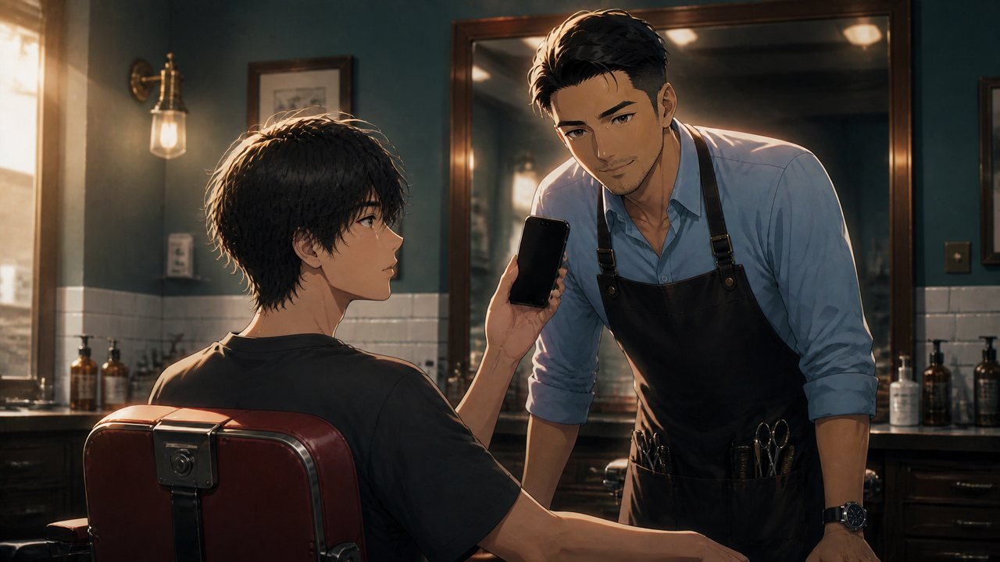
こういう髪型に。
オーダー（ビフォー）
20代がなりたい髪型をオーナーに相談。来店時は伸びた無造作ヘア。
S3 / 7–11秒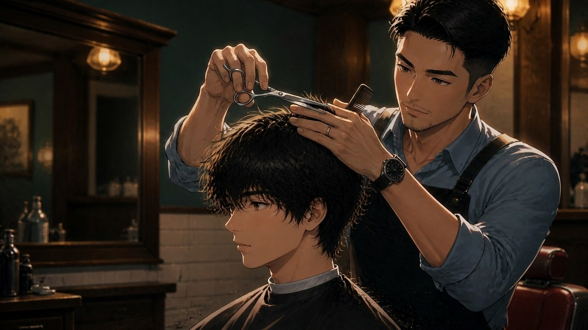
まずは、輪郭から。
★施術1 カット（シザー）
伸びた髪をシザーで切り落とす。舞う毛、金属の煌めき。
S4 / 11–15秒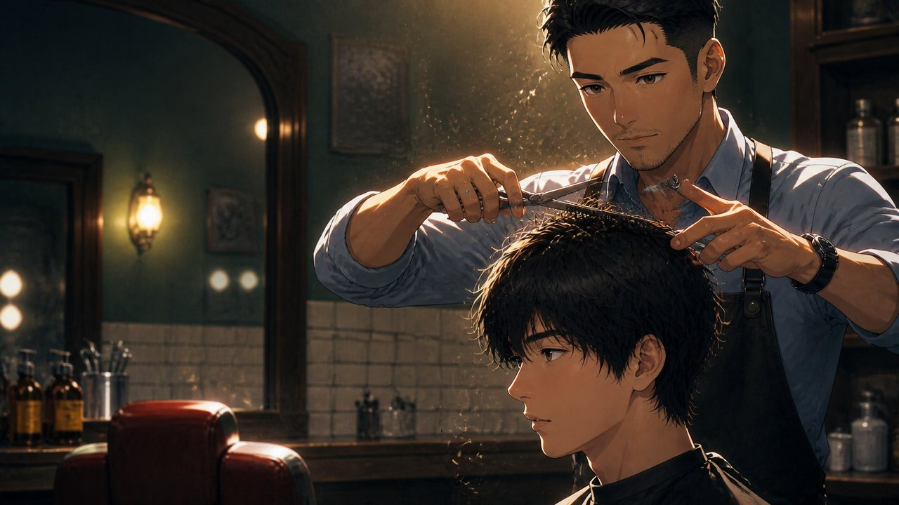
毛量と、質感を整える。
★施術2 毛量調整（シザーオーバーコーム）
コームを通しながら量感と質感をコントロール。技術の見せ場。
S5 / 15–19秒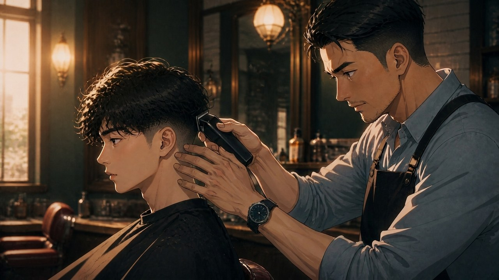
サイドは、ミリ単位。
★施術3 刈り上げ（バリカン）
サイド・襟足をバリカンで短く。フェードの土台づくり。
S6 / 19–23秒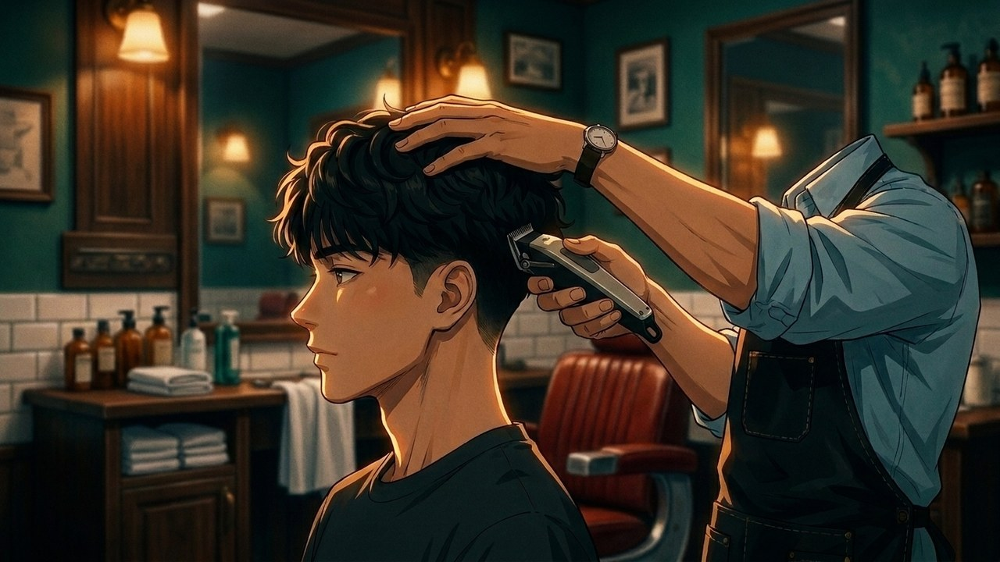
攻めるなら、フェード。
★施術4 フェード
低めフェードのグラデを繋ぐ。トップの波巻きが形になる。
S7 / 23–27秒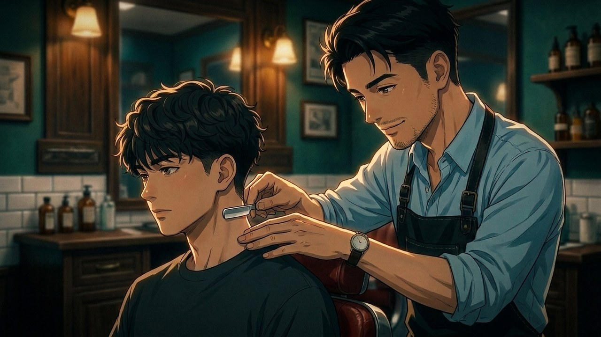
際は、レザーで。
★施術5 際のレザー
えり足・もみあげ・生え際をレザーで整える。清潔感の決め手。
S8 / 27–31秒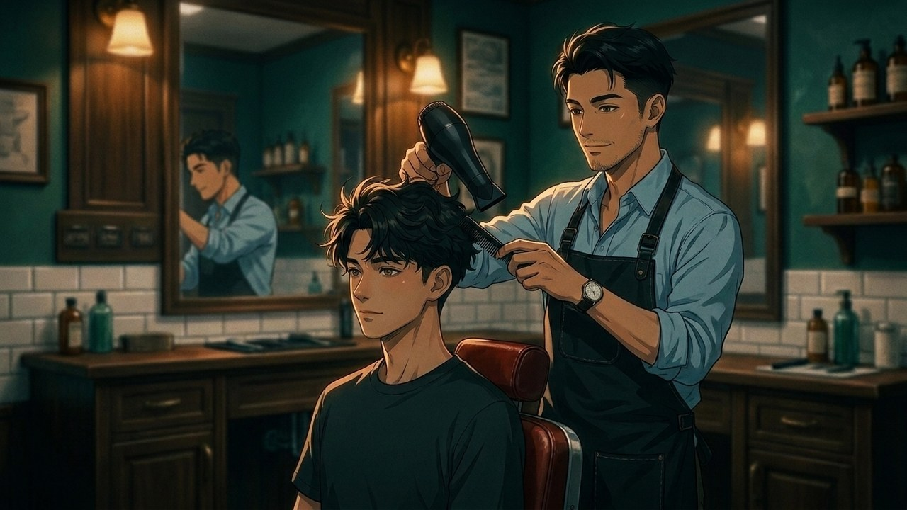
トップに、動きを。
★施術6 スタイリング
ドライ＆コームでトップに動きを付けて仕上げ。
S9 / 31–35秒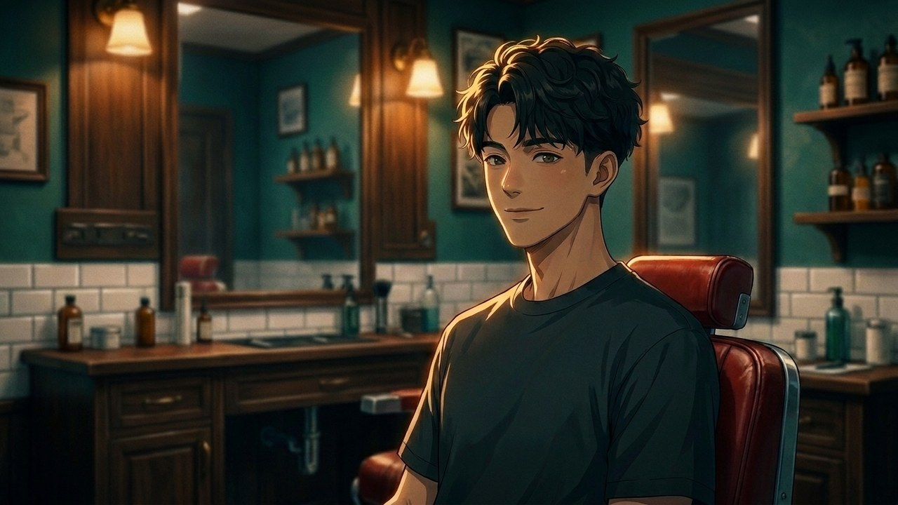
垢抜けた、塩顔フェード。
完成（20代）
凛とした“新しい自分”。ビフォーからの変化を見せる。
お客様② 40代（大人の渋み）
S10 / 35–38秒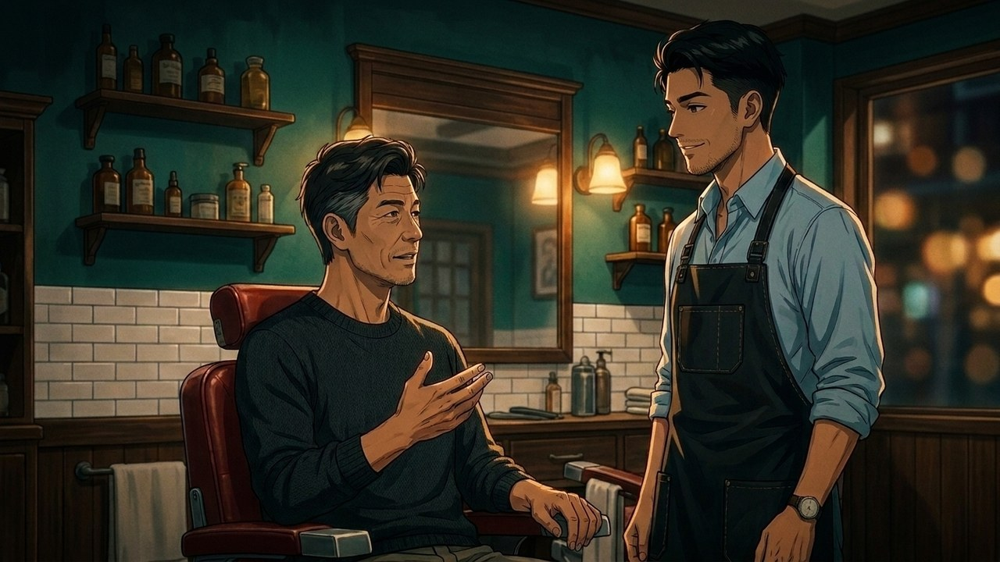
大人も、これで。
オーダー（ビフォー）
40代も同じ路線をオーダー。来店時は普通の短髪＋無精ヒゲ。
S11 / 38–41秒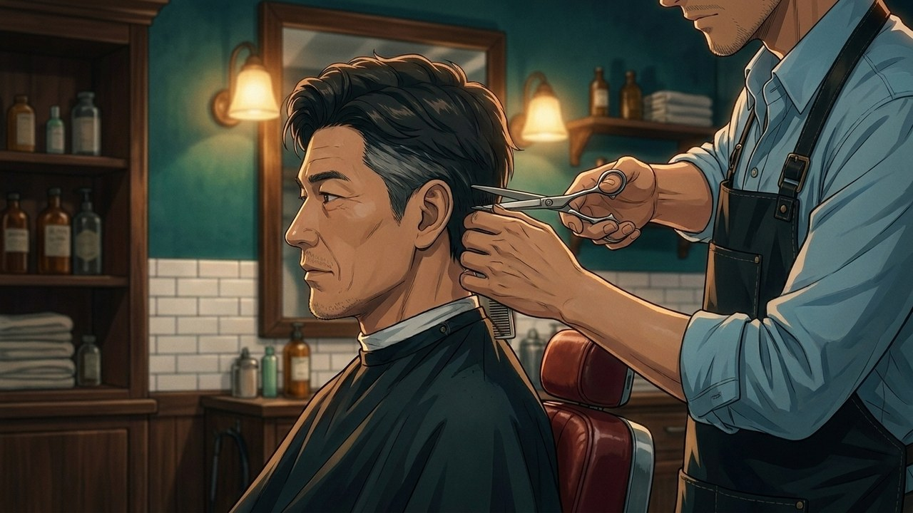
渋さは、技術から。
S12 / 41–44秒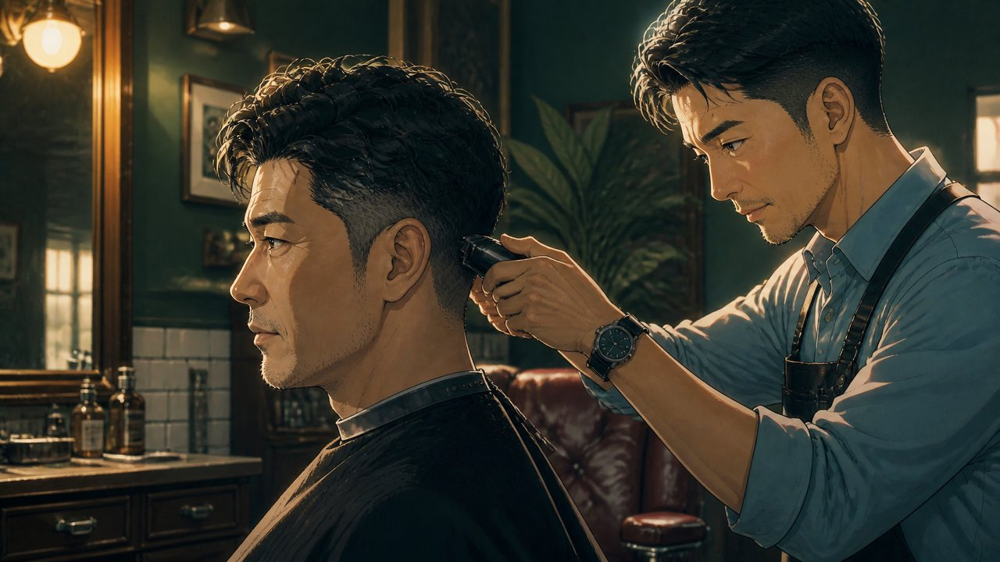
清潔感を、足す。
★施術 フェード
サイドをすっきり。白髪まじりのこめかみに清潔感を。
S13 / 44–47秒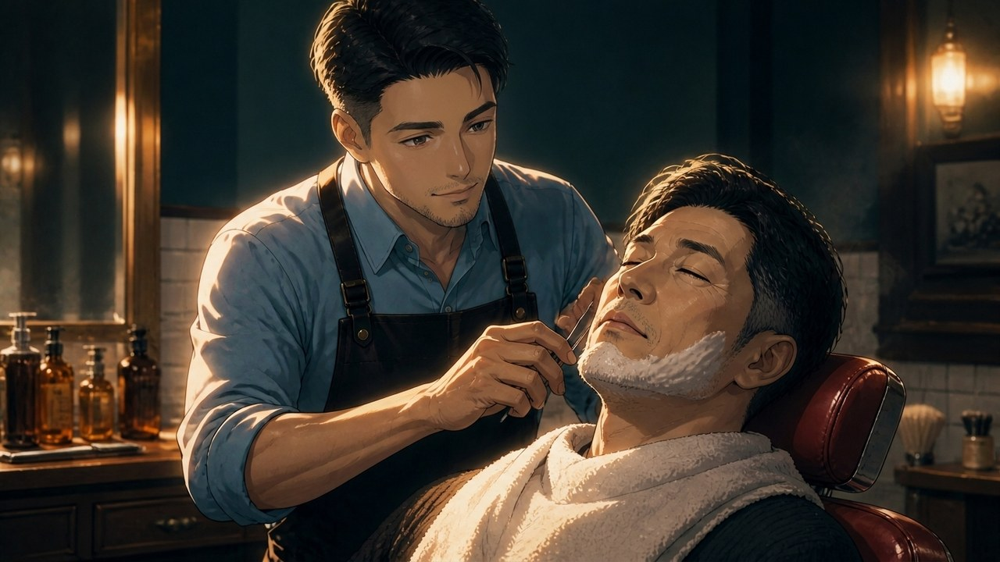
熱いタオルと、一枚刃。
★施術 シェービング
熱いタオル→レザーシェービング。湯気が立つ名シーン。
S14 / 47–50秒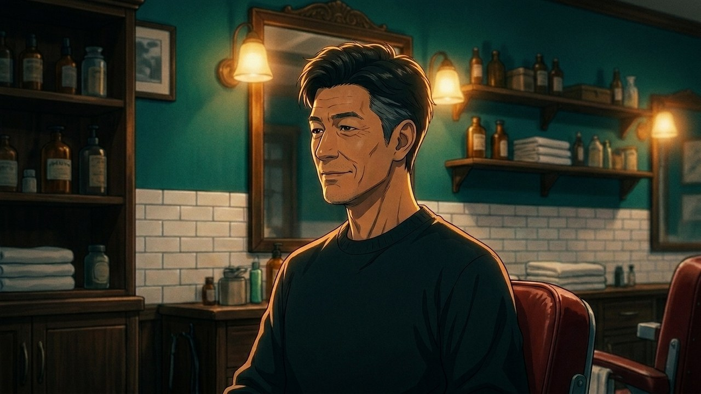
渋さも、更新できる。
完成（40代）
整った大人のフェード。年を重ねるほど似合う。
締め
S15 / 50–53秒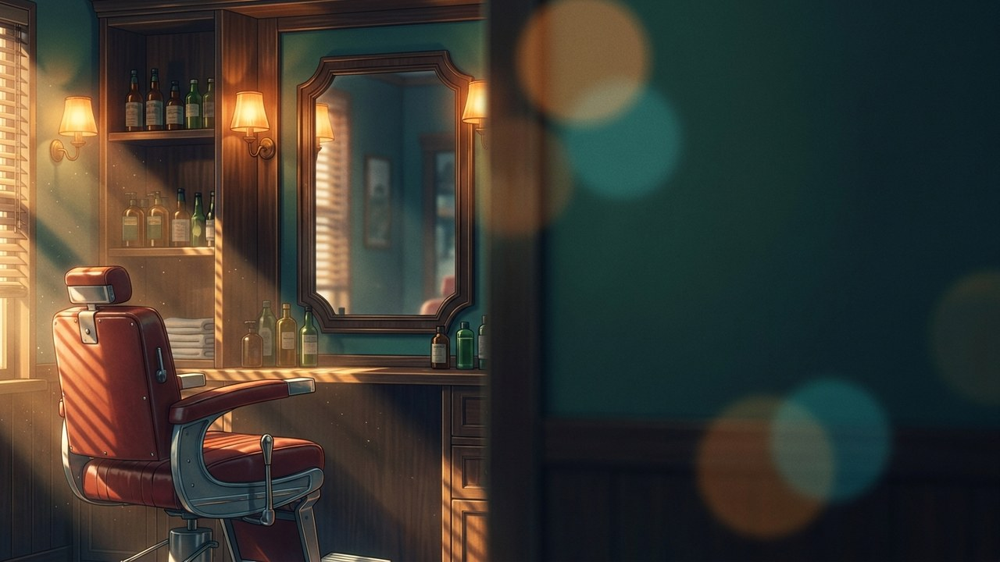
ご予約は公式LINEから（QR）
エンドカード / CTA
余白に「三浦理容室ロゴ＋公式LINE QR」を重ねる予定。住所・電話は出しません。
ご確認いただきたい点
- 全体の方向性（シネマティック・アニメ／ビフォー→施術→アフター）でOKでしょうか
- 施術カットの数・順番（20代6工程／40代3工程）はこの配分でよいか
- BGMは「都会的でおしゃれなチル系」で仮置き。ご希望のトーンがあれば
- オーナーの上半身・横向きのお写真をいただければ、ご本人に寄せて仕上げます